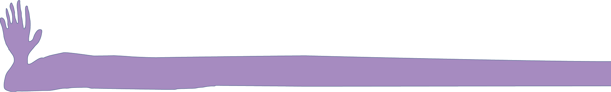

Learn how to play, fail & tinker with machines
AI is often approached in extremes: it either sparks excitement or fear. Yet, AI is here to stay. It is crucial that we learn how to work with it in a thoughtful, playful, and collaborative way. ai, ai, ai is a collection of recipes prepared, or inspired, by the work of artists working with AI. They guide you step by step through a creative exploration of, and with, AI.
